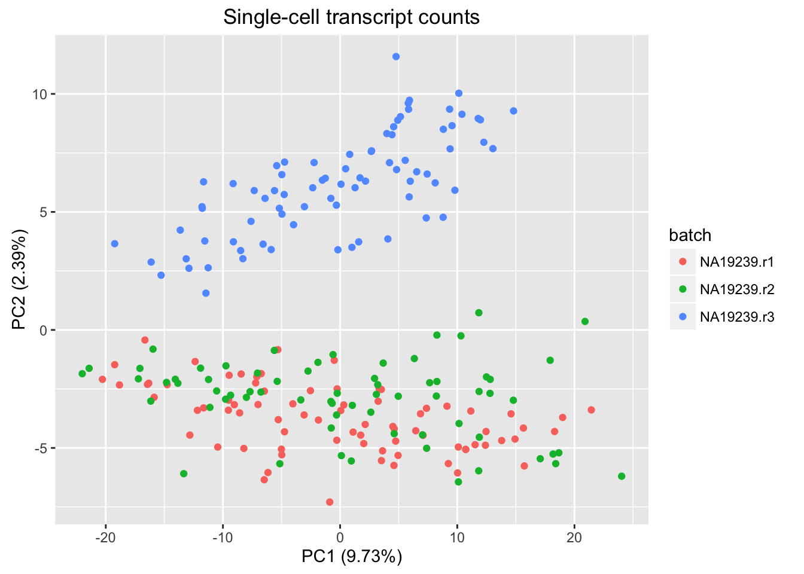

Last updated: 2016-01-15
Code version: 41f37793a0adb3cc0b0c019bf40649af6d21c8dd
I imported a subset of the singleCellSeq data and performed a principal component analysis to explore visually the similarity between batches in transcriptional expression profile. The data set includes 225 induced pluripotent stem cells (iPSCs) derived from a Yoruba cell line (NA19239) and a subsample of 1,000 genes). The cells were collected from the same cell culture and processed in three different batches.
I used the PCA functions created by John Blischak (ashlar/codes) to inspect the first two major sources of variation in expression profiles. I was interested in learning: Do cells collected in different batches share similar variation? A batch
Import gene by sample (cell) matrix. Each column consists of molecule counts of a single cell.
molecules_filter_subsample <- read.table("../data/molecules-filter-subsample.txt",
header = TRUE,
stringsAsFactors = FALSE)
dim(molecules_filter_subsample)[1] 1000 225Import metadata information. This annotates for every cell the individual (cell line) labels, replicate labels, etc.
annotation_filter_subsample <- read.table("../data/annotation-filter-subsample.txt",
header = TRUE,
stringsAsFactors = FALSE)
head(annotation_filter_subsample) individual replicate well batch sample_id
344 NA19239 r1 A01 NA19239.r1 NA19239.r1.A01
345 NA19239 r1 A03 NA19239.r1 NA19239.r1.A03
346 NA19239 r1 A05 NA19239.r1 NA19239.r1.A05
347 NA19239 r1 A06 NA19239.r1 NA19239.r1.A06
348 NA19239 r1 A07 NA19239.r1 NA19239.r1.A07
349 NA19239 r1 A08 NA19239.r1 NA19239.r1.A08dim(annotation_filter_subsample)[1] 225 5Source PCA functions.
source("../code/functions.R")Run PCA.
pca_results <- run_pca(as.matrix(molecules_filter_subsample))Visualize PCA results.
plot_pca(pca_results$PCs,
explained = pca_results$explained,
metadata = annotation_filter_subsample,
color = "batch") +
labs(title = "Single-cell transcript counts")Warning: package 'ggplot2' was built under R version 3.2.3
sessionInfo()R version 3.2.1 (2015-06-18)
Platform: x86_64-apple-darwin13.4.0 (64-bit)
Running under: OS X 10.10.5 (Yosemite)
locale:
[1] en_US.UTF-8/en_US.UTF-8/en_US.UTF-8/C/en_US.UTF-8/en_US.UTF-8
attached base packages:
[1] stats graphics grDevices utils datasets methods base
other attached packages:
[1] ggplot2_2.0.0 knitr_1.11
loaded via a namespace (and not attached):
[1] Rcpp_0.12.2 digest_0.6.8 plyr_1.8.3 grid_3.2.1
[5] gtable_0.1.2 formatR_1.2.1 magrittr_1.5 evaluate_0.8
[9] scales_0.3.0 stringi_1.0-1 rmarkdown_0.9.2 labeling_0.3
[13] tools_3.2.1 stringr_1.0.0 munsell_0.4.2 yaml_2.1.13
[17] colorspace_1.2-6 htmltools_0.3